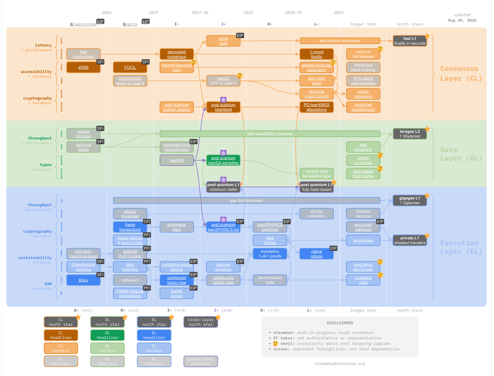

Most of the state is dead weight. Move it out of the database, keep the state root identical, and let the trie resurrect it on demand.
Scale, early 2026: ~360M accounts, ~1.5B storage slots (figures from EIP-8188's rationale).
The other 97% is paying rent in the hot path and never showing up for work. Measurement ongoing — treat the exact figure as provisional.
EIP-4444 is still formally Stagnant. Clients pruned history anyway, behind flags. Remember that when we get to the roadmap.
type expiredNode struct { offset uint64 // where the leaves live size uint64 // how many bytes to read cachedHash hashNode // subtree root: consensus unchanged archiveResolver archive.ResolverFn }
In db: 1 marker byte + 8 offset + 8 size. A whole subtree collapses to that.
A write costs one path, not one subtree, and nothing already in the archive is invalidated. Re-hashing cost is what grows with subtree height — that's the real reason height 3 is the sweet spot.
The trie stops paying for generality it never uses on cold data.
What you give up is the ability to answer for that subtree — so something has to hand the leaves back, exactly like history: a peer, a proof, or a third party. This is the design space the PR opens, not what it implements today.
// one new field, on every account and every slot - account = RLP([nonce, balance, storageRoot, codeHash]) + account = RLP([nonce, balance, storageRoot, codeHash, last_written_block]) - slot_value = RLP(value) + slot_value = RLP([value, last_written_block])
Old entries stay readable: a 4-element account decodes as 0, and a bare slot bytestring (0x80+) is told apart from the new list (0xc0+) by its RLP prefix. Hard fork, but no tree transition.
Then archival stops guessing which subtrees are cold: every client reads the same consensus-verified write age and picks the same set.
Hetzner dedicated, 12 cores / 22 GB RAM / 1TB SSD. Blocks 1,217,349 → 2,415,761 replayed on identical snapshots.
Hoodi bought 17.5% of its import time. Mainnet buys almost nothing in speed and a quarter of the disk. Same code, same subtree height, opposite headline — that is not noise, and the next slide is the reason.

Research-y roadmaps are a coordination artefact, not a delivery mechanism. History expiry is the tell: the EIP still says Stagnant, and clients shipped it anyway.